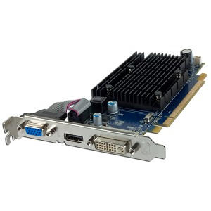
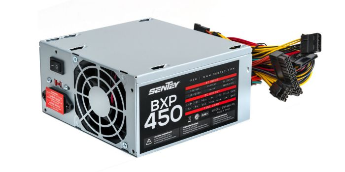
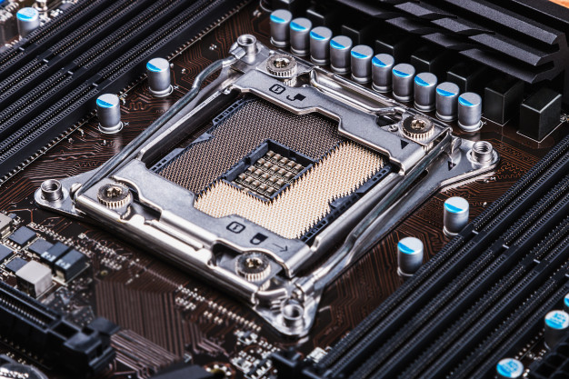

La PC prende pero no arranca, La solución definitiva de tu dolor de cabeza.
Aunque no creas aquí si o si te vamos a dar la solución pero todo quedara de parte tuya que cantidad de empeño le hagas a esto, TECNO EXPAND esta especializado en soluciones como estas aunque estés lejos de nosotros, pero así como quiere ayudarte tienes que darte advertencia por los motivos por que la PC no arranque puedes ser por varios motivos así como la memoria RAM, tarjeta madre, fuente de poder o la tarjeta madre que también son más detalles dentro de ella por que se encuentra el Chipset.
Quiero una soluciona donde me garantice que todo saldrá bien
La palabra (solucionado), si quieres que esto salga de tu boca tienes que prestar atención a esta siguiente palabra que TECNO EXPAND enseña a sus alumnos ser (PRECAVIDO) avece enseñamos un poco de psicología a nuestros clientes para cuando estén frente de una PC no los domine el miedo, ya con eso se logra lo contrario de la solución, ponerla peor, solo queremos decirle que si no te siente seguro o tienes miedo de dañarla te podemos orientar desde nuestra página de Facebook desde el chat privado nuestro equipo técnico te espera, si es así puedes llevarla también a un técnico que sé especialicé en este tema.

Esto son problemas electrónicos quiere decir hardware, pero para que esto salga todo bien y puedas solucionar estos en la mayoría de casos es la memoria RAM, que tiene este problema o es por que no la colocaste bien después de que la desarmaste o por que están sucia o por que hasta allí llego su límite de vida, como nada dura para siempre un día se tiene que dañar pero tranquilo puede ser sucio para asegurarse que es sucio con una borra le pasas por los pines. Después con una brocha le pasas para que quites las partículas de lo que queda en la borra.
Esto no me sirvió de nada ¿qué otra solución hay?
Si es así como dices el subtítulo entonces vamos a la siguiente solución, esto en caso que tengas una tarjeta gráfica aquí te pediré paciencia por que hablaré tanto de la tarjeta gráfica como la salida de video de la motherboard, en caso que tengas tarjeta gráfica puedes hacer el mismo procedimiento con la borra o retirar la tarjeta y probarla en la salida de video de tu tarjeta madre.
Si no tienes tarjeta gráfica para asegurarse que la salida de video no este quemada prueba con una tarjeta gráfica es lo que te recomiendo tecno expand, hemos hecho un montón de trabajos así y la gran mayoría es por memoria RAM o por salida de videos quemadas, en ocasiones es la fuente de poder.
Aún tengo el mismo problema no me solucionado nada
No te preocupes tecno expand no se va a detener hasta que consigas el objetivo que es solucionarte el problema, aquí hablaremos en este caso la fuente de poder que avece es una de las causas de esta dicho problema, y unas de las razones para descartar el problema es probando con otra fuente de poder si es en portátiles prueba quitándole la batería y solo conectándolo con el cargador.
Sigo teniendo el problema y con una preocupación
Tranquilo esto tiene solución en dado caso que aun el problema persista tendremos que verificar muy bien el procesador te recomiendo que retires el fan cooler, después cuidadosamente el metal que hace presión al procesador lo retiras puedes aprovechar y limpiar si tienes pasta térmica lo seca y lo limpias con algodón o un hisopo colocándole un poco de agua oxigenada y limpia el parte de la superficie después lo secas con un algodón seco, posteriormente colocas todo otra vez y puedes prender la PC (OJO TODO ESTE PROCEDIMIENTO TIENES QUE HACERLO CON LA PC DESENCHUFADA) y antes de tocar espera como 3 minutos antes de hacer esta solución.
Y si aùn tengo el problema¿ se quemo?
Hay otras soluciones para esto no te preocupes nosotros tecno expand siempre te damos soluciones, ahora, para no hacer este articulo tan largo la siguiente soluciones te la podemos dar un chat privado por facebook asi que tranquilo escribenos a nuestro facebook y podemos ayudar y orientar en tu problema tecnico.
Quizas te puede interesar